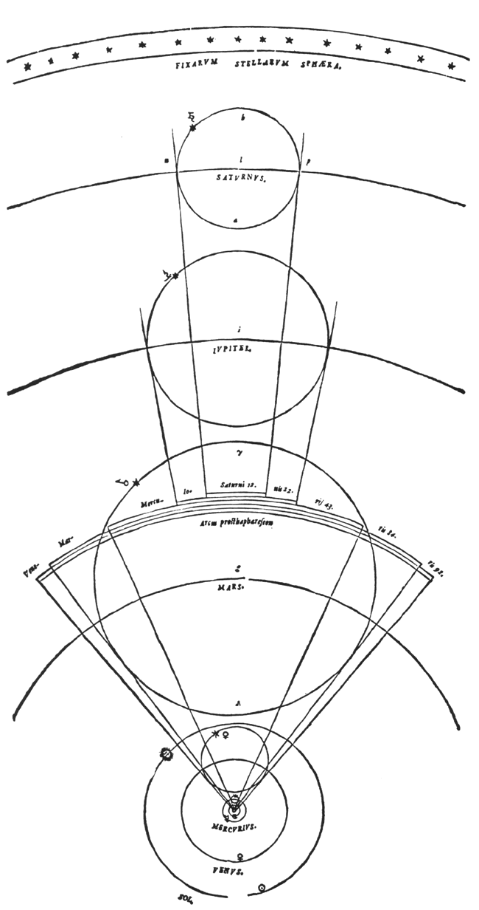
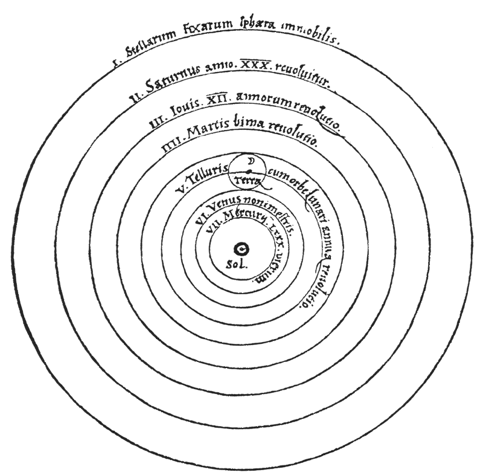
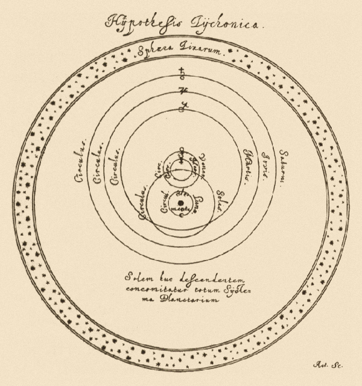

Some Guy From Buffalo
Still Waiting for Copernicus
In 1543, a Polish astronomer published a book so quietly radical that he dedicated it to the pope, hoping nobody important would read past the dedication. This astronomer, Nicolaus Copernicus, thought that the current models of the universe, while correct, were too ugly. The Ptolemaic system, which had kept the Earth pinned to the center of creation for more than a thousand years, could be used to accurately predict eclipses, track planets, and keep astrologers in business. To Copernicus, its most unappealing mathematical foundation was the equant, an off-center point that let a planet preserve the appearance of uniform circular motion while actually moving at different speeds depending on where it stood. God, he felt, would not have built so inelegant a contraption.
His goal was to be able to remove exceptions without having to rescue the model with new ones, something we would later come to know as Occam's razor. So he tried something else. What if the Sun sat still, and the Earth were merely another planet, orbiting along with the rest?


Suddenly retrograde motion, that maddening, seemingly backward movement of the planets across the night sky, was explainable without special pleading. It was not the planets doing loops, but rather the Earth overtaking the slower outer planets on the inside track, similar to a faster car making a slower one appear to drift backward. This was the elegance Copernicus was after.
While this made Copernicus's model conceptually cleaner, in practice it did not end up mechanically simpler. To maintain the same predictive accuracy, he had to keep eccentric orbits and epicycles, and he never once questioned uniform circular motion. In the end, his model wasn't obviously leaner than Ptolemy's. While he had rearranged the cosmos around a more coherent premise, he had still left most of the relationships intact. He had discovered a tidier way to lie almost as much as before, but the rearrangement left astronomers asking what the center was and where it belonged.
Genomics' Earth
But what does this have to do with human genomics?
Previously, we outlined how genomic medicine represents your DNA as a list of deviations from one specific reference genome and how this reference is a patchwork assembled mostly from the cells of a single anonymous donor. The most commonly used reference is GRCh38, which, more or less, is the current equivalent of Earth in the Earth-centric universe that is modern human genetics.
The bulk of the reference's sequence comes from one donor, known by the code RP11, with the rest stitched in from others.2 Do not think that the reference is impersonal. It is accidentally personal since it is a mosaic dominated by one stranger and then treated as though it was THE neutral human origin.
This origin came to be when RP11, a man from Buffalo, answered an advertisement that ran in the Buffalo News on March 23, 1997. He and nineteen other volunteers were sequenced and told that no more than about ten percent of the final sequence was expected to come from any single one of them.3 That expectation did not hold since, by the end, RP11 was roughly seventy percent of the reference.
The medical genomics community then took the skewed average genome and pitched the personalized-medicine revolution, all built on the fictitious neighbor. As a result, most people who get genomic sequencing receive a list of deviations from a central reference, their orbits based on a mosaic that is seventy percent one man from Buffalo.
This is not the first time the healthcare space has made such a mistake. Adolphe Quetelet brought it to biology by applying astronomy's theory of errors to understand human physical traits. The theory of errors proposed that at the center of many measurements lies the true value and that deviations from it are errors. We dive deeper into this in our history book, but Quetelet's approach of measuring many humans to find a true center led to a measurement that persists today. He developed the weight-over-height-squared formula that he used to define "normal," a formula renamed the body mass index (BMI) in 19724 and still used in modern healthcare.
Because of how the reference genome is constructed, the most common complaint has naturally been that the small, select group is not representative of the broader diversity found across eight billion humans. This criticism is valid, but it sits downstream of an even bigger peculiarity.
The diversity argument calls for a more representative reference. The problem is that the reference is already too personalized, only to someone else. It is a mosaic of human sequences, seventy percent of them from one man. Any sequence or variation not present in that group becomes difficult to express, and so it gets missed. Gradually, quietly, the reference allele gets mistaken for the true value. It becomes the "normal" allele, the "ancestral" allele, the most common one. These are labels of convenience, not descriptions of reality, but a shared convention is more useful than no shared language at all.
The reference allele is simply an anchor placed at the center of the universe.
Replace it with a different, more diverse center, and you still have a center. You have only moved it. This has been useful for medicine. A reference point is a serviceable way to make a map for localized navigation. But it means everything must be charted in relation to that point. Most sequencing projects have already decided where the result should start. The report just tells you how far from it you are, not what you actually are.
Nearly five centuries after Copernicus moved the Earth, one anonymous man from Buffalo remains fixed at the middle of the human genome.
A Prettier Center
One man turned Copernicus's quiet heresy into a public emergency. Galileo did this by proclaiming it loudly, in public and in Italian, which turned out to be the actual "crime." The Church had been perfectly comfortable with heliocentrism as a calculating tool, and Copernicus's own book had prelates cheering him on. The trouble started when Galileo turned a technical dispute into a public referendum on who was allowed to decide what was true. The dangerous step was the moment the model claimed to be the truth.
Decades earlier, a quieter figure had found a way to reconcile both views. In Tycho Brahe's system, the Earth stayed in the center, biblically aligned. The other planets orbited the Sun, and the Sun, in turn, orbited the Earth. It was the astronomical equivalent of having your cake and eating it too. Since Tycho kept most of Copernicus's mathematical organization without asking anyone to admit the Earth moved, it stayed a popular compromise for decades.

Genomics has its Tychos. The newest and best-engineered reference is CHM13. This reference, finished in 2022, is the first nearly complete telomere-to-telomere human genome from a single sample. CHM13 is now gapless where the older references had been politely looking away, giving a richer, more defined center to the genomic universe.6
The downside is that CHM13 is just one genome. Swapping GRCh37 for GRCh38, and then GRCh38 for CHM13, is Tycho's compromise all over again, a better-built model that avoids major change and still insists something has to sit at the center. The better references allow for sharper maps and better distance measurements, but the system is still referential, just with a center relocated to a nicer spot.
Endnotes
-
Cornell University, "Galileo." Presents paired diagrams of the pre-Copernican and Copernican conceptions of the solar system. https://courses.cit.cornell.edu/hd11/Galileo.html
-
Genome Reference Consortium, "Frequently Asked Questions," National Center for Biotechnology Information. States that the RP11 (RPCI-11) library, from an anonymous male donor of African-European admixture, contributes roughly 70% of the GRCh38 primary assembly, with the remainder drawn from more than 50 other libraries. https://www.ncbi.nlm.nih.gov/grc/help/faq/
-
Ashley Smart, "The Untold Story of the Human Genome Project: How One Man's DNA Became a Pillar of Genetics," STAT, July 9, 2024. Reports the Buffalo News recruitment advertisement of March 23, 1997, and the consent form's statement that no more than about 10% of the eventual sequence was expected from any one donor. https://www.statnews.com/2024/07/09/human-genome-project-untold-story-how-single-volunteer-became-genetics-foundation/
-
Ancel Keys et al., "Indices of Relative Weight and Obesity," Journal of Chronic Diseases 25, no. 6-7 (1972): 329-343. Coined the term "body mass index" for Quetelet's weight-over-height-squared ratio. https://doi.org/10.1016/0021-9681(72)90027-6
-
Anonymous, "Hypothesis Tychonica," in Johannes Hevelius's Selenographia (1647), 163. Image via Wikimedia Commons, "File:Tychonian.png." Public domain. https://commons.wikimedia.org/wiki/File:Tychonian.png
-
Sergey Nurk et al. (Telomere-to-Telomere Consortium), "The Complete Sequence of a Human Genome," Science 376, no. 6588 (2022): 44-53. Describes the gapless T2T-CHM13 assembly of the 22 autosomes and chromosome X. Karen H. Miga et al., "Telomere-to-Telomere Assembly of a Complete Human X Chromosome," Nature 585 (2020): 79-84. Reports that the CHM13hTERT cell line was cultured from one complete hydatidiform mole and represents a duplicated paternal haplotype. Arang Rhie et al., "The Complete Sequence of a Human Y Chromosome," Nature 621 (2023): 344-354. Reports that the Y chromosome was assembled from the separate HG002 genome and then combined with CHM13. https://doi.org/10.1126/science.abj6987; https://doi.org/10.1038/s41586-020-2547-7; https://doi.org/10.1038/s41586-023-06457-y